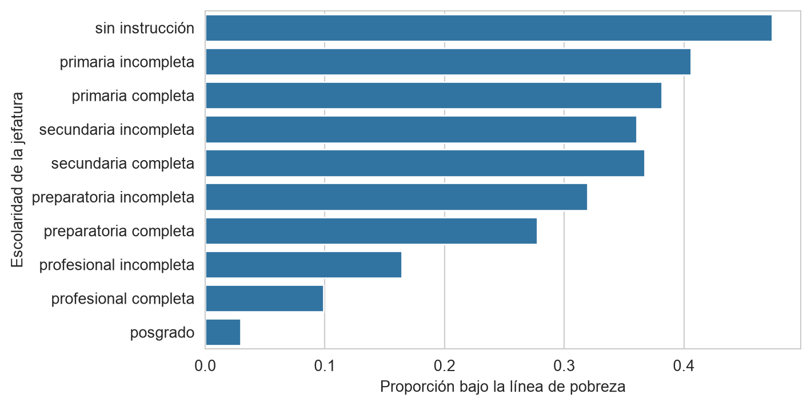
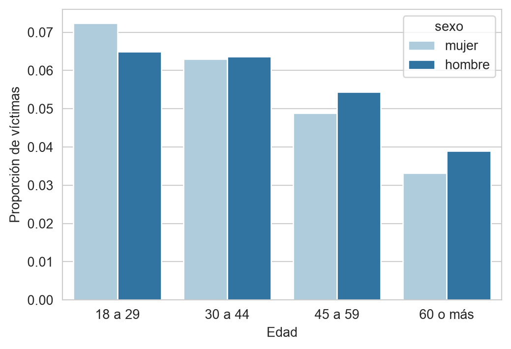
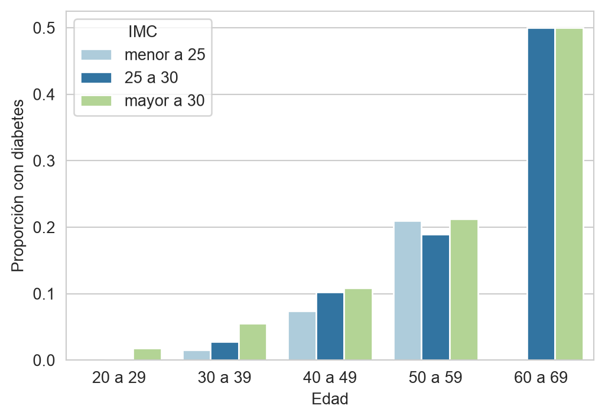
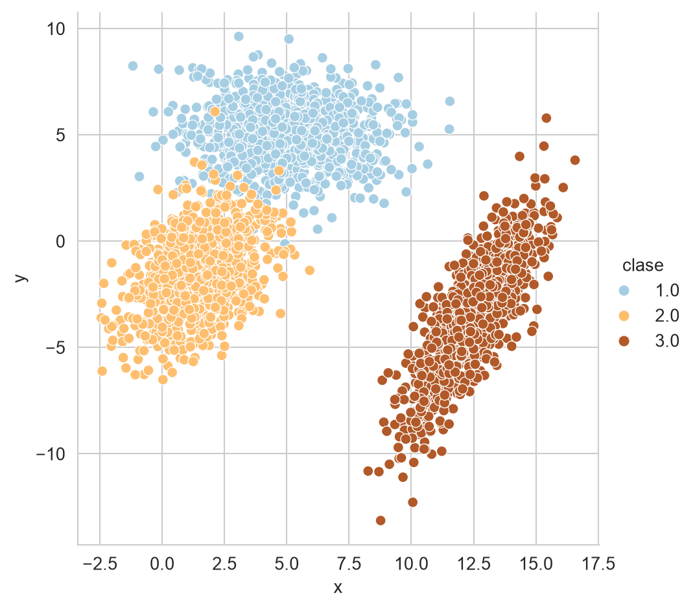
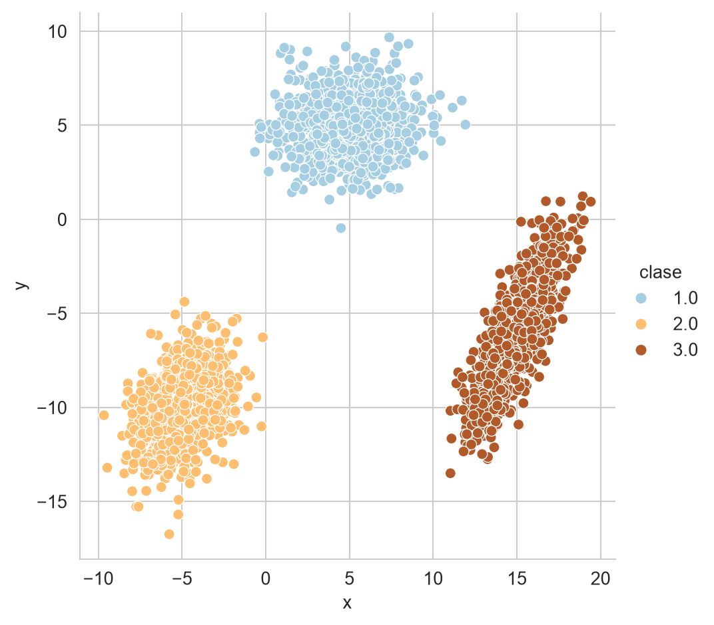
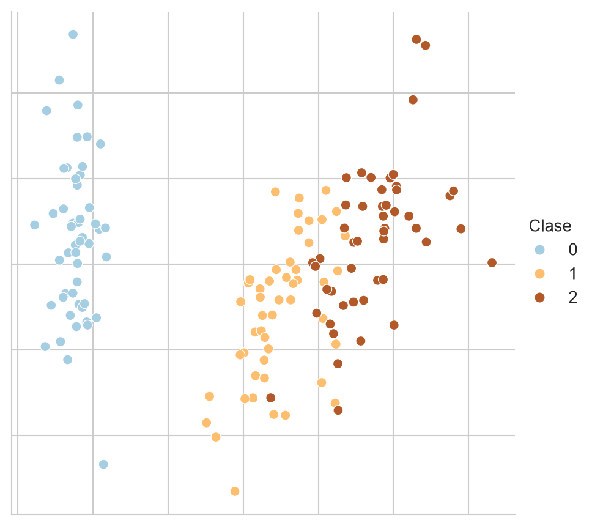
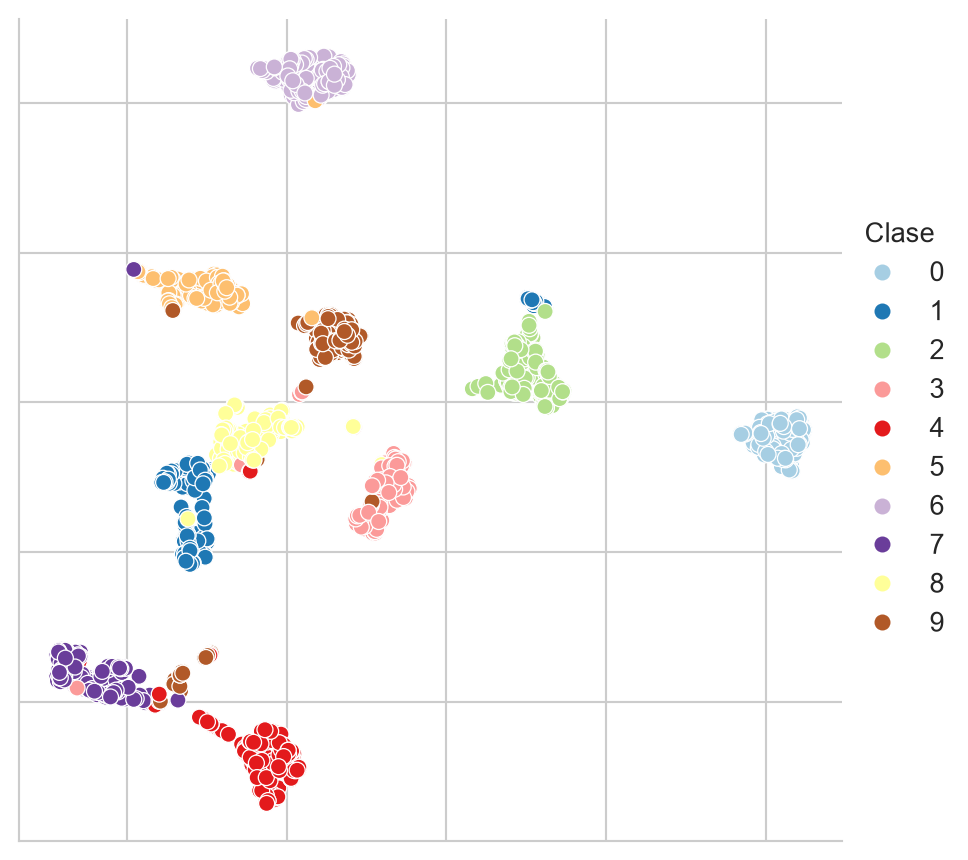

from sklearn.datasets import load_breast_cancer,\
load_diabetes,\
load_digits, load_iris,\
load_wine
from sklearn.preprocessing import StandardScaler
from sklearn import decomposition
from scipy.stats import multivariate_normal
import umap
from matplotlib import pylab as plt
import matplotlib as mpl
import numpy as np
import pandas as pd
import seaborn as sns
PALETTE = mpl.cm.PairedApéndice B — Conjunto de Datos
El objetivo de este apéndice es listar los conjuntos de datos utilizados en el curso. Primero se presentan los conjuntos de política pública mexicanos, cada uno con su ficha (fuente, licencia, unidad de observación, variables) y la tarea de aprendizaje que lo motiva; al final se conservan, como problemas sintéticos y clásicos, los conjuntos que se usan para ilustrar los algoritmos.
Paquetes usados
B.1 Problemas de Política Pública
Los conjuntos de esta sección provienen de encuestas y registros administrativos oficiales de México y cada uno responde a una decisión pública concreta, como a quién dirigir un programa social, dónde reforzar la prevención del delito, a quién ofrecer un tamizaje de salud, qué planteles apoyar para que sus estudiantes no abandonen la escuela o cómo aproximar las condiciones de un barrio cuando el censo ya no es reciente. Los archivos procesados están en el release datos-v1 del repositorio del libro y el código de cada subsección los lee directamente de ahí. La Tabla B.1 resume los cinco conjuntos. En ella, el tamaño \(N\) es el número de observaciones y la dimensión \(d\) es el número de variables predictoras, es decir, no cuenta la variable objetivo ni las columnas que son factores de expansión o identificadores.
| Nombre | Unidad | Tamaño (\(N\)) | Dimensión (\(d\)) | Tarea | Año | Fuente |
|---|---|---|---|---|---|---|
| Pobreza | Hogar | \(89988\) | \(42\) | Clasificación (binaria) | 2022 | ENIGH, INEGI |
| Seguridad | Persona | \(91797\) | \(49\) | Clasificación (binaria) | 2025 | ENVIPE, INEGI |
| Salud | Adulto | \(6143\) | \(16\) | Clasificación (binaria) | 2022 | ENSANUT, INSP |
| Educación | Secundaria | \(26689\) | \(17\) | Regresión y clasificación (3 clases) | 2023-2025 | Formato 911, SEP |
| Territorio | AGEB urbana | \(464\) | \(30\) | Regresión | 2020 y 2026 | Censo y DENUE, INEGI |
B.1.1 Pobreza
Los programas de transferencias necesitan decidir qué hogares son elegibles, pero medir el ingreso de un hogar es costoso, poco confiable y, en el caso de la informalidad, casi imposible de verificar. Una alternativa es la prueba de medios sustituta (proxy means test), que consiste en predecir si un hogar es pobre a partir de características fáciles de observar de su vivienda y de su composición, y usar esa predicción para focalizar. La tarea de este conjunto es precisamente esa, clasificar si un hogar se encuentra por debajo de la línea de pobreza por ingresos sin usar ninguna variable de ingreso ni de gasto.
Ficha
- Fuente: Encuesta Nacional de Ingresos y Gastos de los Hogares (ENIGH) 2022, Nueva Serie, del INEGI (Instituto Nacional de Estadística y Geografía (2023)), datos abiertos. La línea de pobreza por ingresos de agosto de 2022 (canasta alimentaria más no alimentaria, valor mensual por persona) es la que publica el CONEVAL (Consejo Nacional de Evaluación de la Política de Desarrollo Social (2025)) y vale $2,970.19 en el ámbito rural y $4,157.63 en el urbano.
- Licencia: Términos de libre uso de la información del INEGI.
- Unidad de observación: hogar.
- Tamaño: \(N=\) \(89988\) hogares, que son todos los de la encuesta con información completa en las variables usadas.
- Variables: \(d=\) \(42\) predictoras observables de la vivienda y el hogar, entre ellas la entidad federativa, el tamaño de localidad, el tipo de hogar, el número y las edades de los integrantes, el sexo, la edad y la escolaridad de la jefatura, los materiales de la vivienda (paredes, techo, piso), los cuartos y dormitorios, los servicios (agua, drenaje, electricidad, combustible para cocinar, basura), la tenencia, y los bienes y el equipamiento (vehículos, computadoras, refrigeradores, lavadoras, internet, etc.). No hay ninguna variable de ingreso ni de gasto. La columna
factores el factor de expansión de la encuesta y no es predictora. - Objetivo y tarea:
pobre_ingresosvale \(1\) cuando el ingreso corriente per cápita mensual del hogar (el ingreso corriente trimestral entre tres y entre el número de integrantes) es menor que la línea de pobreza de su ámbito (rural si la localidad tiene menos de \(2500\) habitantes). Es una tarea de clasificación binaria; es una aproximación a la medición oficial, no la replica.
El siguiente código lee el archivo.
pobreza = pd.read_csv('https://github.com/INGEOTEC/AprendizajeComputacional/releases/download/datos-v1/enigh_pobreza.csv.gz')En el conjunto, la proporción de hogares bajo la línea de pobreza es \(32.7\%\); si se ponderan los hogares con el factor de expansión es \(34.5\%\). Por ámbito, es \(35.6\%\) en los hogares rurales y \(30.9\%\) en los urbanos. La Figura B.1 muestra cómo cambia esta proporción con la escolaridad de la jefatura del hogar.
Código
orden = ['sin instrucción', 'primaria incompleta', 'primaria completa',
'secundaria incompleta', 'secundaria completa',
'preparatoria incompleta', 'preparatoria completa',
'profesional incompleta', 'profesional completa', 'posgrado']
fig, ax = plt.subplots(figsize=(7, 4))
_ = sns.barplot(pobreza, y='escolaridad_jefe', x='pobre_ingresos',
order=orden, errorbar=None, ax=ax, color=PALETTE(1))
_ = ax.set(xlabel='Proporción bajo la línea de pobreza',
ylabel='Escolaridad de la jefatura')
B.1.2 Seguridad
La prevención del delito y el despliegue policial se planean con estadísticas oficiales, pero las denuncias sólo registran una parte de los delitos. Las encuestas de victimización permiten estudiar quién es víctima y qué relación tiene con las condiciones del entorno y la percepción de inseguridad. La tarea de este conjunto es clasificar si una persona fue víctima de algún delito durante el año de referencia. Como las víctimas son una minoría, el problema es de clases desbalanceadas, y equivocarse al no identificar a una víctima y equivocarse al marcar a quien no lo es no cuestan lo mismo, lo que será relevante al hablar de decisiones y costos.
Ficha
- Fuente: Encuesta Nacional de Victimización y Percepción sobre Seguridad Pública (ENVIPE) 2026 del INEGI (Instituto Nacional de Estadística y Geografía (2026b)), datos abiertos. Es la edición más reciente publicada al preparar los datos; el periodo de referencia es el año 2025.
- Licencia: Términos de libre uso de la información del INEGI.
- Unidad de observación: persona de \(18\) años o más seleccionada como informante.
- Tamaño: \(N=\) \(91797\) personas, que son todas las seleccionadas como informantes en la encuesta que respondieron si fueron víctimas de algún delito personal.
- Variables: \(d=\) \(49\) predictoras, entre ellas la entidad, el dominio (urbano, complemento urbano o rural), el sexo, la edad, el nivel de instrucción, la condición de actividad, el tamaño del hogar, el tiempo en la vivienda y las preguntas de percepción de la encuesta (temas que preocupan, percepción de seguridad en la colonia, el municipio, el estado y en lugares específicos, problemas e incivilidades en la colonia, temor a ser víctima y expectativas). No se incluyen variables que sean consecuencia de la victimización, como las medidas de protección, los cambios de conducta por temor, el contacto con autoridades o la denuncia. La columna
factores el factor de expansión y no es predictora. - Objetivo y tarea:
victima_delitovale \(1\) cuando la persona declara haber sido víctima, durante \(2025\), de algún delito personal (robo o asalto, otro tipo de robo, fraude, extorsión, amenazas, lesiones, secuestro, delitos sexuales u otros). Los delitos que afectan al hogar, como el robo de vehículo o a casa habitación, no forman parte del objetivo. Es una tarea de clasificación binaria con clases desbalanceadas.
El siguiente código lee el archivo.
seguridad = pd.read_csv('https://github.com/INGEOTEC/AprendizajeComputacional/releases/download/datos-v1/envipe_seguridad.csv.gz')En el conjunto hay \(5034\) víctimas, es decir, \(5.5\%\) de las personas (\(5.7\%\) al ponderar con el factor de expansión). La Figura B.2 muestra la proporción de víctimas por grupo de edad y sexo.
Código
grupo = pd.cut(seguridad.edad, [17, 29, 44, 59, 120],
labels=['18 a 29', '30 a 44', '45 a 59', '60 o más'])
df = pd.DataFrame(dict(grupo=grupo, sexo=seguridad.sexo,
victima=seguridad.victima_delito))
fig, ax = plt.subplots(figsize=(6, 4))
_ = sns.barplot(df, x='grupo', y='victima', hue='sexo',
errorbar=None, palette='Paired', ax=ax)
_ = ax.set(xlabel='Edad', ylabel='Proporción de víctimas')
B.1.3 Salud
Los sistemas de salud no pueden hacer pruebas de glucosa a toda la población adulta con la misma frecuencia, por lo que el tamizaje se dirige a las personas con más riesgo. Saber qué características permiten anticipar el diagnóstico de diabetes, y cuántos casos se perderían con cada regla de focalización, es una decisión de política de salud pública. La tarea de este conjunto es clasificar si una persona adulta tiene un diagnóstico médico previo de diabetes. Hay que tener presente que un diagnóstico previo no es lo mismo que la presencia de la enfermedad, pues las personas sin acceso a servicios de salud pueden tener diabetes sin saberlo.
Ficha
- Fuente: Encuesta Nacional de Salud y Nutrición Continua (ENSANUT) 2022 del Instituto Nacional de Salud Pública (INSP) (Instituto Nacional de Salud Pública (2023)), bases de datos. Se combinan el cuestionario de salud de adultos, el de antropometría y tensión arterial y el índice de bienestar del hogar.
- Licencia: acceso libre para investigación y docencia, citando al INSP como fuente.
- Unidad de observación: persona adulta con mediciones de peso, talla y tensión arterial; las edades van de \(20\) a \(69\) años. Se excluyen las mujeres embarazadas o en lactancia y las personas con diabetes sólo durante el embarazo.
- Tamaño: \(N=\) \(6143\) personas.
- Variables: \(d=\) \(16\) predictoras, entre ellas la entidad, el tamaño de localidad, el quintil del índice de bienestar del hogar, el sexo, la edad, el peso, la talla, el índice de masa corporal y la tensión arterial medidos, diagnóstico previo de hipertensión, antecedentes familiares de diabetes (padre, madre y hermanos), tabaquismo y consumo de alcohol. No se incluye ninguna pregunta sobre el tratamiento ni las complicaciones de la diabetes. La columna
factores el ponderador de la encuesta y no es predictora. - Objetivo y tarea:
diabetesvale \(1\) cuando un médico le dijo a la persona que tiene diabetes (o azúcar alta en la sangre). Se eligió diabetes y no hipertensión porque hay suficientes casos, y es una tarea de clasificación binaria.
El siguiente código lee el archivo.
salud = pd.read_csv('https://github.com/INGEOTEC/AprendizajeComputacional/releases/download/datos-v1/ensanut_salud.csv.gz')En el conjunto hay \(558\) personas con diagnóstico de diabetes, es decir, \(9.1\%\). La Figura B.3 muestra que la proporción aumenta con la edad y con el índice de masa corporal.
Código
grupo = pd.cut(salud.edad, [19, 29, 39, 49, 59, 69],
labels=['20 a 29', '30 a 39', '40 a 49', '50 a 59', '60 a 69'])
imc = pd.cut(salud.imc, [0, 25, 30, 100],
labels=['menor a 25', '25 a 30', 'mayor a 30'])
df = pd.DataFrame(dict(grupo=grupo, imc=imc, diabetes=salud.diabetes))
fig, ax = plt.subplots(figsize=(6, 4))
_ = sns.barplot(df, x='grupo', y='diabetes', hue='imc',
errorbar=None, palette='Paired', ax=ax)
_ = ax.set(xlabel='Edad', ylabel='Proporción con diabetes')
_ = ax.legend(title='IMC')
B.1.4 Educación
El abandono escolar es uno de los principales obstáculos para que la educación cumpla su papel como mecanismo de movilidad social, y la transición de la primaria a la secundaria y de la secundaria a la educación media superior es un momento crítico. Los programas de becas, de tutoría y de reinserción tienen recursos limitados y deben decidir qué planteles apoyar primero. La tarea de este conjunto es predecir, para cada secundaria, la tasa de abandono escolar a partir de las características del plantel; como la variable objetivo es numérica, se trata de un problema de regresión.
Ficha
- Fuente: Estadística del Formato 911 de la Secretaría de Educación Pública (SEP), registro del alumnado y personal docente de educación básica, media superior y superior (Secretaría de Educación Pública (2024)), publicada en datos.gob.mx. Se usan los archivos de educación básica, nivel secundaria, de los ciclos escolares 2023-2024 y 2024-2025 (este último es el más reciente disponible al preparar los datos).
- Licencia: Creative Commons Atribución 4.0 (CC-BY-4.0).
- Unidad de observación: secundaria-turno, identificada por su clave de centro de trabajo (
clave_cct) y su turno. Sólo se incluyen los planteles que aparecen en los dos ciclos y que al inicio del ciclo 2023-2024, descontando a los egresados, tenían al menos \(30\) alumnos, porque las tasas de planteles más pequeños son muy inestables; también se descartan los que no reportan docentes o grupos. - Tamaño: \(N=\) \(26689\) planteles.
- Variables: \(d=\) \(17\) predictoras, todas del ciclo 2023-2024, entre ellas la entidad, el sostenimiento (público o privado y su tipo), el tipo de servicio (general, técnica, telesecundaria o Conafe), el turno, la organización de los docentes, el número de alumnos, de grupos y de docentes, los alumnos por docente y por grupo, los porcentajes de mujeres, de alumnos de primer grado y de repetidores, las aulas en uso, los laboratorios y los talleres. La columna
clave_cctidentifica al plantel y no es predictora. No se usa ninguna cifra del ciclo 2024-2025 como predictora, pues forma parte del objetivo. - Objetivo y tarea:
tasa_abandonoes la tasa de abandono escolar del ciclo 2023-2024 con la definición de la SEP, que compara las matrículas de dos ciclos consecutivos y es igual a \(100\left(1 - \frac{M_{t+1} - NI_{t+1}}{M_t - E_t}\right)\), donde \(M_t\) es la matrícula al inicio del ciclo \(t\) (2023-2024), \(M_{t+1}\) la del ciclo siguiente, \(NI_{t+1}\) el nuevo ingreso a primer grado del ciclo siguiente y \(E_t\) los egresados del ciclo \(t\). Entre planteles hay traslados, por lo que en un plantel individual la tasa puede ser negativa (recibe más alumnos de los que pierde); en esos casos se acota a cero. Es una tarea de regresión.
El siguiente código lee el archivo.
educacion = pd.read_csv('https://github.com/INGEOTEC/AprendizajeComputacional/releases/download/datos-v1/sep_f911_educacion.csv.gz')La tasa de abandono tiene media \(6.9\%\) y mediana \(4.8\%\); el \(10\%\) de los planteles con más abandono tiene al menos \(16.2\%\), y \(26.2\%\) de los planteles tienen una tasa de cero (incluye los casos acotados). La Figura B.4 muestra la distribución de la tasa de abandono.
Código
fig, ax = plt.subplots(figsize=(6, 4))
_ = sns.histplot(educacion, x='tasa_abandono', bins=40, ax=ax,
color=PALETTE(1))
_ = ax.set(xlabel='Tasa de abandono (%)', ylabel='Número de planteles')
B.1.4.1 Variante de clasificación: prioridad de atención
Ninguno de los conjuntos del release tiene más de dos clases, y varios algoritmos del libro se describen mejor con más de dos. Para ilustrarlos se define, a partir de la tasa de abandono, la variable prioridad con la que un programa de tutorías atendería a cada plantel. Los planteles que no tienen abandono tienen prioridad baja, el \(10\%\) de los planteles con más abandono tiene prioridad alta y todos los demás tienen prioridad media. Es una variable ordinal derivada del objetivo y por eso, cuando se usa como variable a predecir, tasa_abandono deja de ser una variable predictora. El corte es el percentil \(90\) del conjunto completo, pues es una regla del programa (atender al \(10\%\) de planteles con más abandono) y no una variable predictora, por lo que no filtra información del conjunto de entrenamiento al de prueba. La clase se codifica con \(0\) para baja, \(1\) para media y \(2\) para alta.
corte = educacion.tasa_abandono.quantile(0.9)
prioridad = np.where(educacion.tasa_abandono == 0, 0,
np.where(educacion.tasa_abandono > corte, 2, 1))El corte es una tasa de abandono de \(16.2\%\). La clase baja (prioridad == 0) tiene \(26.2\%\) de los planteles, la media (prioridad == 1) \(63.8\%\) y la alta (prioridad == 2) \(10.0\%\). Es un problema de clasificación de tres clases, con la clase alta como minoritaria, por lo que al partir los datos en entrenamiento y prueba conviene estratificar con stratify=prioridad.
B.1.5 Territorio
Los censos son la mejor fuente de condiciones sociales a escala de barrio, pero se levantan cada diez años; entre un censo y otro, la planeación urbana y la focalización territorial de programas necesitan aproximaciones con información más reciente. El Directorio Estadístico Nacional de Unidades Económicas (DENUE) se actualiza con frecuencia y dice qué negocios hay en cada zona. La tarea de este conjunto es predecir un indicador censal, el grado promedio de escolaridad, a partir de la composición de establecimientos del DENUE de cada AGEB urbana (área geoestadística básica) del estado de Aguascalientes.
Ficha
- Fuente: Censo de Población y Vivienda 2020, resultados por AGEB y manzana urbana de Aguascalientes (Instituto Nacional de Estadística y Geografía (2021)), datos abiertos, y DENUE de Aguascalientes, edición 05_2026 (Instituto Nacional de Estadística y Geografía (2026a)), descarga. Ambos son del INEGI.
- Licencia: Términos de libre uso de la información del INEGI.
- Unidad de observación: AGEB urbana. Se usan los renglones de total por AGEB del censo y se descartan los AGEB con menos de \(100\) habitantes, donde el grado promedio de escolaridad es muy inestable, y aquellos cuyo valor está suprimido.
- Tamaño: \(N=\) \(464\) AGEB, con \(68905\) establecimientos del DENUE en total; \(1\) AGEB no tienen ningún establecimiento y su conteo es cero.
- Variables: \(d=\) \(30\) predictoras, que son el número de establecimientos por sector SCIAN (agropecuario, minería, manufactura, comercio al por mayor y al por menor, servicios profesionales, educación, salud, alojamiento y alimentos, entre otros) y por estrato de personal ocupado, el total de establecimientos y dos columnas de tamaño del AGEB (
pob_totalyviviendas_habitadas). Los tres indicadores censales adicionales (pct_viv_internet,pct_sin_servicio_saludypct_jefatura_femenina) sirven como objetivos alternativos y no deben usarse como predictoras cuando el objetivo es la escolaridad. Las columnasclave_agebymunicipioidentifican el AGEB y no son predictoras. - Objetivo y tarea:
grado_promedio_escolaridades el grado promedio de escolaridad de la población de \(15\) años o más en 2020. Es una tarea de regresión. - Valores suprimidos: el censo oculta algunos valores por confidencialidad (
*) o los reporta como no disponibles (N/D). Aquí se tratan explícitamente, pues se descartan los AGEB cuyo objetivo está suprimido y los porcentajes de los indicadores adicionales quedan vacíos cuando su numerador o su denominador está suprimido; hay \(1\), \(1\) y \(0\) valores vacíos enpct_viv_internet,pct_sin_servicio_saludypct_jefatura_femenina, respectivamente. - Desfase temporal: el censo es de 2020 y el DENUE de 2026, por lo que los establecimientos son más recientes que la población que se describe.
El siguiente código lee el archivo.
territorio = pd.read_csv('https://github.com/INGEOTEC/AprendizajeComputacional/releases/download/datos-v1/censo_denue_territorio.csv')El grado promedio de escolaridad tiene media \(10.80\), con un mínimo de \(6.92\) y un máximo de \(15.45\) años. La Figura B.5 muestra el grado promedio de escolaridad contra el número de establecimientos por cada mil habitantes de cada AGEB.
Código
df = territorio.copy()
df['establecimientos_por_mil'] = 1000 * df.est_total / df.pob_total
fig, ax = plt.subplots(figsize=(6, 4))
_ = sns.scatterplot(df, x='establecimientos_por_mil',
y='grado_promedio_escolaridad', ax=ax, alpha=0.6,
color=PALETTE(1))
_ = ax.set(xlabel='Establecimientos por cada mil habitantes',
ylabel='Grado promedio de escolaridad')
B.2 Problemas Sintéticos y Clásicos
En esta sección se conservan los problemas sintéticos y los conjuntos clásicos de clasificación y regresión que se usan, en el resto del libro, para ilustrar el funcionamiento de los algoritmos.
B.2.1 Problemas Sintéticos
En esta sección se presentan los problemas sintéticos que corresponden aquellos problemas en los que se conocen todos los parámetros y se usan para mostrar algunas características de los algoritmos.
B.2.1.1 Mezcla de Clases
p1 = multivariate_normal(mean=[5, 5],
cov=[[4, 0], [0, 2]])
X_1 = p1.rvs(size=1000)
p2 = multivariate_normal(mean=[1.5, -1.5],
cov=[[2, 1], [1, 3]])
X_2 = p2.rvs(size=1000)
p3 = multivariate_normal(mean=[12.5, -3.5],
cov=[[2, 3], [3, 7]])
X_3 = p3.rvs(size=1000)Figura B.6 muestra estas tres distribuciones.
Código
D = np.concatenate((X_1, X_2, X_3))
clase = [1] * 1000 + [2] * 1000 + [3] * 1000
D = np.concatenate((D, np.atleast_2d(clase).T), axis=1)
df = pd.DataFrame(D, columns=['x', 'y', 'clase'])
_ = sns.relplot(data=df, kind='scatter', x='x',
palette=PALETTE,
y='y', hue='clase')
B.2.1.2 Clases Separadas
X_1 = multivariate_normal(mean=[5, 5],
cov=[[4, 0], [0, 2]]).rvs(1000)
X_2 = multivariate_normal(mean=[-5, -10],
cov=[[2, 1], [1, 3]]).rvs(1000)
X_3 = multivariate_normal(mean=[15, -6],
cov=[[2, 3], [3, 7]]).rvs(1000)Este problema se muestra en la Figura B.7.
Código
D = np.concatenate((X_1, X_2, X_3))
clase = [1] * 1000 + [2] * 1000 + [3] * 1000
D = np.concatenate((D, np.atleast_2d(clase).T), axis=1)
df = pd.DataFrame(D, columns=['x', 'y', 'clase'])
_ = sns.relplot(data=df, kind='scatter', x='x',
palette=PALETTE,
y='y', hue='clase')
B.2.2 Problemas de Clasificación
En esta sección se listan los problemas de clasificación utilizados durante el curso. La Tabla B.2 resume las principales características de los problemas utilizados. Se incluye la entropía como una medida que está relacionada al desbalance de clases, la entropía está normalizada para que su rango se encuentre entre \([0, 1].\)
| Nombre | Tamaño (\(N\)) | Dimensión (\(d\)) | Número de clases (\(K\)) | Entropía |
|---|---|---|---|---|
| Breast Cancer | \(569\) | \(30\) | \(2\) | 0.95 |
| Iris | \(150\) | \(4\) | \(3\) | 1.00 |
| Dígitos | \(1797\) | \(64\) | \(10\) | 1.00 |
| Vino | \(178\) | \(13\) | \(3\) | 0.99 |
B.2.2.1 Breast Cancer Wisconsin
El conjunto de datos de Breast Cancer Wisconsin (ver Street et al. (1993)) se obtiene con el siguiente código. La Figura B.8 muestra una proyección utilizando PCA de este conjunto de datos.
D, y = load_breast_cancer(return_X_y=True)Código
D = StandardScaler().fit_transform(D)
pca = decomposition.PCA(n_components=2).fit(D)
low_dim = pca.transform(D)
# reducer = umap.UMAP(n_neighbors=5)
# low_dim = reducer.fit_transform(D)
df = pd.DataFrame(low_dim, columns=['x', 'y'])
df['Clase'] = y
fig = sns.relplot(df, kind='scatter',
legend='full',
x='x', y='y', hue='Clase')
fig.tick_params(bottom=False, top=False,
left=False, right=False,
labelbottom=False, labelleft=False)
_ = fig.set(xlabel=None, ylabel=None)
B.2.2.2 Iris
Un conjunto clásico en problemas de clasificación es el problema del Iris descrito por Fisher (1936); este problema se descarga con la siguiente instrucción. La Figura B.9 muestra una visualización de estos datos mediante PCA.
D, y = load_iris(return_X_y=True)Código
D = StandardScaler().fit_transform(D)
pca = decomposition.PCA(n_components=2).fit(D)
low_dim = pca.transform(D)
# reducer = umap.UMAP(n_neighbors=5)
# low_dim = reducer.fit_transform(D)
df = pd.DataFrame(low_dim, columns=['x', 'y'])
df['Clase'] = y
fig = sns.relplot(df, kind='scatter',
legend='full', palette=PALETTE,
x='x', y='y', hue='Clase')
fig.tick_params(bottom=False, top=False,
left=False, right=False,
labelbottom=False, labelleft=False)
_ = fig.set(xlabel=None, ylabel=None)
B.2.2.3 Dígitos
El conjunto de Dígitos (ver Xu et al. (1992)) es un conjunto de clasificación donde se trata de identificar el número escrito en una imagen; este conjunto de datos se descarga utilizando la siguiente instrucción. La Figura B.10 muestra una proyección de estos datos utilizando UMAP con ocho vecinos.
D, y = load_digits(return_X_y=True)Código
reducer = umap.UMAP(n_neighbors=8)
D = StandardScaler().fit_transform(D)
low_dim = reducer.fit_transform(D)
df = pd.DataFrame(low_dim, columns=['x', 'y'])
df['Clase'] = y
fig = sns.relplot(df, kind='scatter',
legend='full', palette=PALETTE,
x='x', y='y', hue='Clase')
fig.tick_params(bottom=False, top=False,
left=False, right=False,
labelbottom=False, labelleft=False)
_ = fig.set(xlabel=None, ylabel=None)
B.2.2.4 Vino
El conjunto de Vino se obtiene con la siguiente instrucción. La Figura B.11 muestra una proyección de estos datos utilizando PCA.
D, y = load_wine(return_X_y=True)Código
D = StandardScaler().fit_transform(D)
pca = decomposition.PCA(n_components=2).fit(D)
low_dim = pca.transform(D)
# reducer = umap.UMAP(n_neighbors=5)
# low_dim = reducer.fit_transform(D)
df = pd.DataFrame(low_dim, columns=['x', 'y'])
df['Clase'] = y
fig = sns.relplot(df, kind='scatter',
legend='full', palette=PALETTE,
x='x', y='y', hue='Clase')
fig.tick_params(bottom=False, top=False,
left=False, right=False,
labelbottom=False, labelleft=False)
_ = fig.set(xlabel=None, ylabel=None)
B.2.3 Problemas de Regresión
En esta sección se listan los problemas de regresión utilizados para ejemplificar los algoritmos y su rendimiento.
B.2.3.1 Problema Sintético
El siguiente ejemplo es un problema de regresión sintético que se forma de la suma de dos funciones trascendentales como se muestra en el siguiente código.
X = np.linspace(-5, 5, 100)
y = np.sin(X) + 0.3 * np.cos(X * 3.)La Figura B.12 muestra este problema sintético.
Código
df = pd.DataFrame(dict(X=X, y=y))
df.set_index('X', inplace=True)
fig = sns.relplot(df, kind='line')
B.2.3.2 Diabetes
El conjunto de datos Diabetes es un problema que se puede recuperar usando el siguiente código.
D, y = load_diabetes(return_X_y=True)